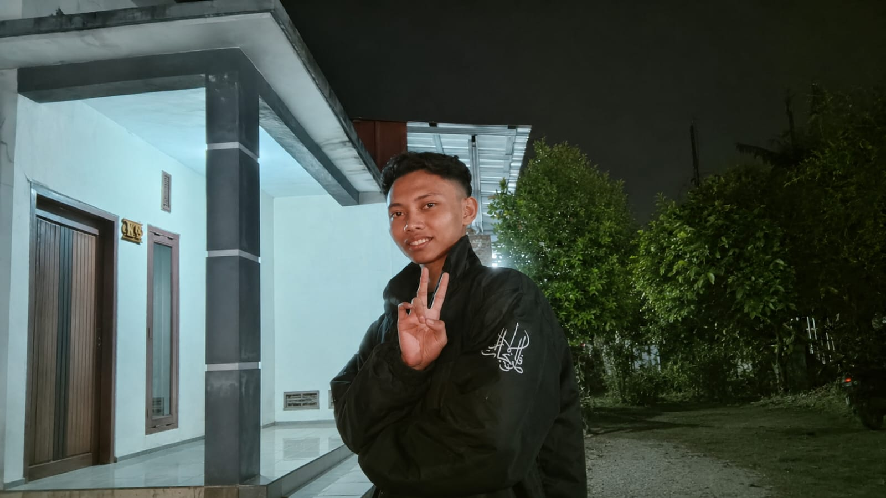
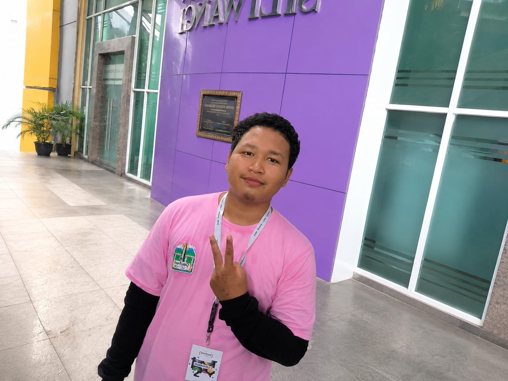
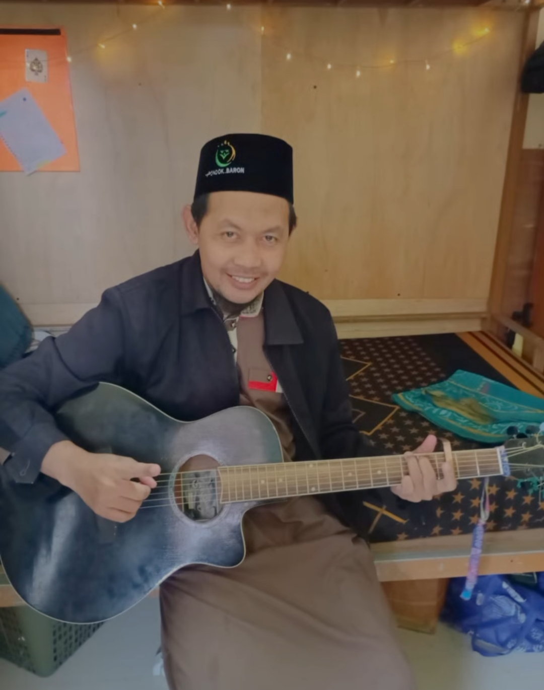

Sertifikat & Prestasi
Penghargaan dan sertifikat yang pernah saya raih


Initializing Portfolio...
Mahasiswa Teknologi Informasi yang memiliki minat dalam pengembangan website modern, teknologi digital, kewirausahaan, dan pengajaran Al-Qur'an.

Mengenal lebih dekat perjalanan saya
Saya shalman maulana cahel, mahasiswa stikom el rahma Teknologi Informasi yang memiliki ketertarikan pada dunia teknologi, pengembangan web, dan inovasi digital.
Selain aktif mempelajari teknologi modern, saya juga memiliki pengalaman dalam berbagai bidang pekerjaan dan pengabdian masyarakat termasuk mengajar Al-Qur'an.
Beberapa proyek yang pernah saya kerjakan antara lain berhasil menyelesaikan tugas membuat kuis berupa google from, serta membuat website design menggunakan figma, saya percaya bahwa teknologi dan nilai-nilai kebaikan dapat berjalan berdampingan untuk menciptakan manfaat yang lebih luas bagi masyarakat.
Jejak pendidikan yang membentuk perjalanan saya hingga saat ini
Memulai perjalanan pendidikan formal dan belajar beradaptasi dengan lingkungan sekolah,teman-teman baru,serta berbagai pengalaman pertama dalam dunia pendidikan.
menjadi pendidikan dasar yang menjadi fondasi penting dalam pembentukan karakter, Kedisiplinan,dan semangat belajar.Pada masa ini saya mulai mengenal berbagai ilmu dasar yang menjadi ilmu dasar yang menjadi bekal untuk pendidikan selanjutnya.
Masa dimana saya mulai belajar lebih mandiri,mengembangkan kemampuan akademik, memperluas pergaulan,serta memperkuat pemahaman agama dan karakter yang menjadi bekal untuk jenjang pendidikan berikutnya.
Menempuh pendididkan menengah atas dengan lingkungan yang memadukan ilmu pengetahuan dan nilai-nilai ke islaman.Pada masa ini saya mulai memiliki ketertarikan yang lebih besar terhadap teknologi,komputer,dan dunia digital yang kemudian mendorong saya memilihjurusan Teknologi Informasi saat kuliah.
Saat inisedang menempuh pendidikan di program studi Teknologi Informasi dengan fokus mempelajari pengembangan website,pemrograman,basis data, dan teknologi digital.
Menjadi developer profesional dan pengusaha berbasis teknologi yang mampu menciptakan solusi digital yang bermanfaat bagi masyarakat.
"Sesungguhnya bersama ke sulitan ada ke mudahan"
Aktifitas yang saya nikmati sebelum masuk kuliah
Melayani pelanggan dan meningkatkan kemampuan komunikasi.
Belajar pemasaran dan pelayanan konsumen.
Melatih tanggung jawab dan manajemen waktu.
Belajar komunikasi dan strategi penjualan.
Berbagi ilmu dan membimbing peserta didik.
Aktivitas yang saya nikmati di waktu luang
Sosok yang memberikan inspirasi dalam perjalanan akademik

Salah satu dosen yang memberikan wawasan dan inspirasi dalam perjalanan akademik di bidang Teknologi Informasi.
Sosok yang memberikan inspirasi dalam perjalanan akademik

Salah satu dosen pembimbing yang berkontribusi dalam memberikan arahan,evaluasi,dan pendampingan selama proses pembelajaran serta pengembangan proyek berbasis teknologi informasi
organisasi yang saya ikuti
Setelah menyelesaikan pendidikan di bidang Teknologi Informasi, saya bercita-cita menjadi seorang pengusaha dan developer profesional yang mampu menciptakan solusi digital yang bermanfaat bagi masyarakat.
Saya ingin membangun usaha berbasis teknologi yang tidak hanya memberikan keuntungan bisnis, tetapi juga memberikan dampak positif bagi banyak orang.
Beberapa project yang pernah saya kerjakan
website portofolio personal berbasis HTML,CSS,dan JAVAScript untuk menampilkan identitas, skill, pengalaman, dan project.
Mendesain daftar menu menggunkan Figma dengan fokus pada tampilan modern, keterbacaan, dan pengalaman pengguna.
Membuat kuis online menggunakan Google From untuk kebutuhan pembelajaran dan pengumpulan jawaban secara otomatis.
Penghargaan dan sertifikat yang pernah saya raih
Mari terhubung melalui media sosial